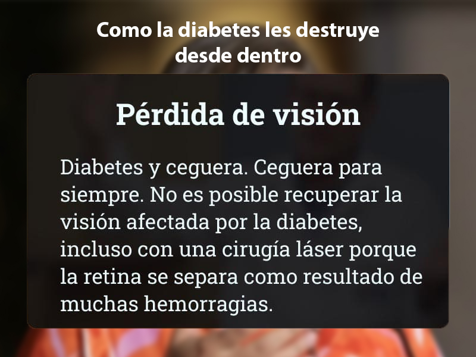
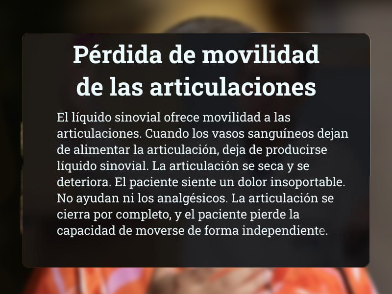
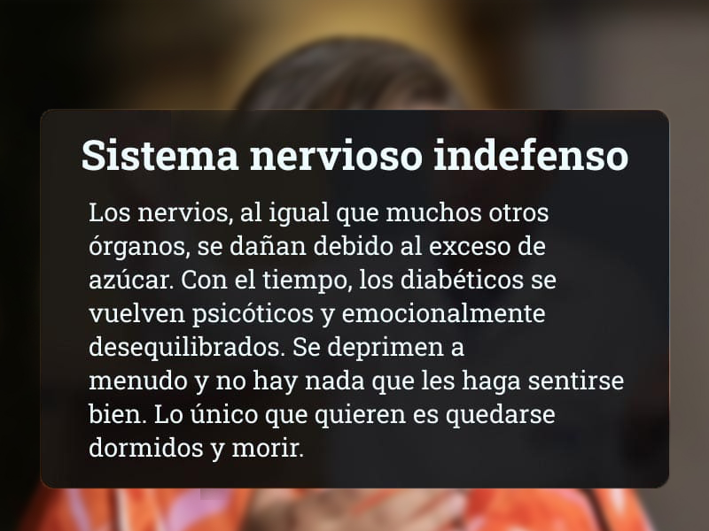
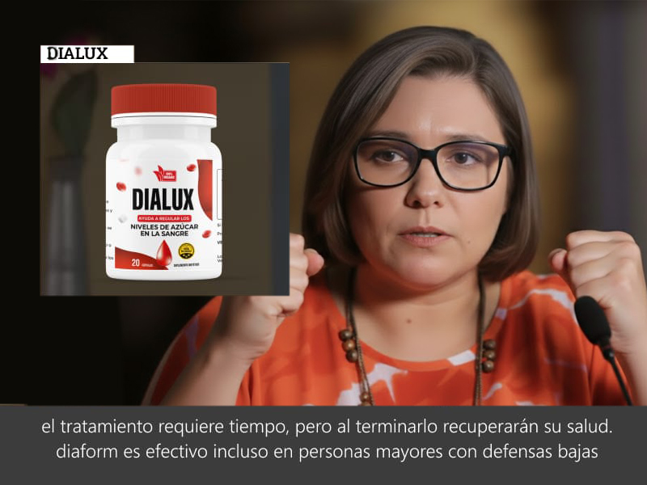
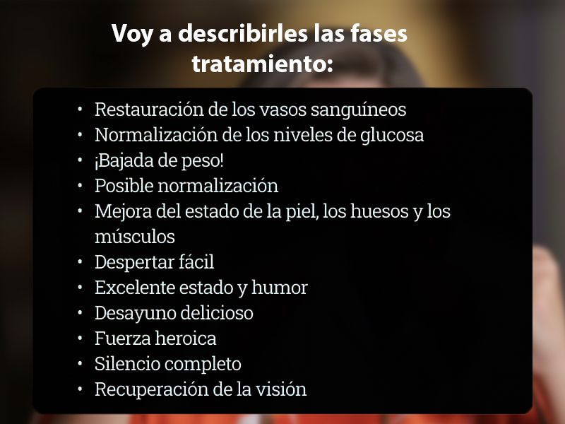
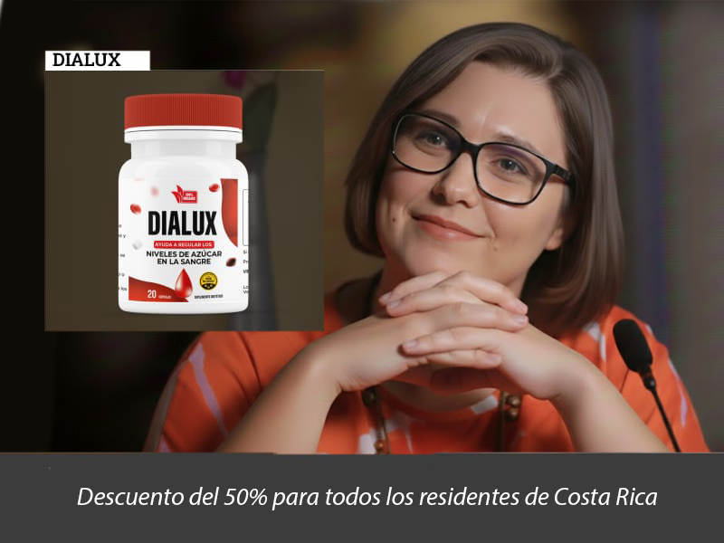

11:50 am
Luisana Melo, Ministra de Salud de Costa Rica, en una revelación exclusiva confirmó lo que durante años fue un secreto a voces: el régimen anterior sistemáticamente restringió el acceso a tratamientos avanzados para la diabetes. "Productos como Dialux, con una eficacia del 96% comprobada, fueron deliberadamente limitados", declaró. Hoy, con el cambio político, esa barrera ha caído. Por primera vez, los costarricenses pueden acceder legalmente a este suplemento natural que estabiliza los niveles de glucosa sin efectos secundarios dañinos.
En una conversación sin precedentes, Luisana Melo accedió a responder todas las preguntas sobre Dialux y el cambio en el panorama de la salud. "La población merece conocer la verdad completa", afirmó. Estos son los puntos esenciales que abordamos en esta entrevista histórica.
Puntos clave de la entrevista con la Ministra de Salud:
- La verdad sobre por qué Dialux no estuvo disponible durante tanto tiempo.
- Los riesgos documentados de los tratamientos tradicionales con metformina.
- Cómo funciona Dialux y por qué tiene un 96% de efectividad comprobada.
- Por qué Costa Rica es ahora el primer país con acceso garantizado.
- Cómo aprovechar el programa de lanzamiento con descuento exclusivo.

Luisana Melo, Ministra de Salud:
Este es el error más grave que persiste en el tratamiento de la diabetes. La metformina no es una solución, sino un camino hacia complicaciones severas. No aborda la raíz del problema. Si un médico solo ofrece este tratamiento sin alternativas, está siguiendo protocolos obsoletos.
El aumento artificial de insulina destruye células y promueve divisiones anormales que derivan en cáncer. Las estadísticas oficiales muestran que el 28% de los diabéticos en estos tratamientos DESARROLLA CÁNCER.
Lista de consecuencias peligrosas terapia con metmorfina:
- Daño gastrointestinal severo: diarrea crónica, úlceras estomacales, reflujo constante
- Hipertensión descontrolada: picos nocturnos, migrañas, acúfenos y ataques de ansiedad
- Cirrosis hepática: el hígado se fibrosa y pierde capacidad para filtrar toxinas del cuerpo
- Cálculos renales y fallo renal por la excreción forzada de minerales y azúcares
- Desarrollo de enfermedades oncológicas y tumores
- Muerte prematura por fallo multiorgánico progresivo
- Ceguera irreversible por daño en los vasos retinianos
Si la metformina mata, ¿por qué sigue usándose?
Durante el régimen anterior, se estableció un sistema que priorizaba el control sobre la salud real. Los especialistas seguían protocolos rígidos sin cuestionar. Se recetaba metformina no por ser lo mejor, sino por ser lo único permitido dentro de ese esquema cerrado. Sus ganancias económicas eran predecibles, aunque su efecto fuera solo temporal.
¡La obediencia ciega no cura! La mayoría de los pacientes desconocía las alternativas existentes y los riesgos reales que enfrentaban. Los profesionales no tenían libertad para informar completamente.
¡Es un error tratar la diabetes solo con químicos agresivos! ¡La diabetes tipo 2 se puede manejar eficazmente! Lo crucial es elegir el método correcto y tener acceso a todas las opciones.
¡Los vasos sanguíneos y los órganos internos no se deben tocar!
Imagínense una cereza o una frambuesa confitada. Lo mismo ocurre con todos los vasos sanguíneos en caso de diabetes. Las paredes de los vasos sanguíneos se llenan de azúcar y se endurecen. Como resultado, los vasos sanguíneos pierden su capacidad de estrecharse y ensancharse. Al principio, los primeros en dañarse son los vasos sanguíneos pequeños, y luego los medianos y los grandes. Los vasos sanguíneos llevan nutrientes a los órganos internos, y los trastornos del suministro de sangre provocan enfermedades crónicas.
  La diabetes es una enfermedad muy peligrosa. Quizás la más peligrosa de todas. Lo siento por las personas con el diagnóstico de diabetes. Intento ayudarles, pero todo depende de uno mismo.
Si no usa metformina, ¿cómo trata la diabetes? Tomemos, por ejemplo, a un jubilado normal y corriente que desarrolló diabetes con la edad. Sus niveles de azúcar en la sangre siguen aumentando. Supongamos que está tomando metformina y se siente mal. ¿Qué se puede hacer para tratar la diabetes? ¿Se puede curar?
Luisana Melo, Ministra de Salud:
Me gustaría mencionar, una vez más, que la diabetes tipo 2 es una enfermedad complicada, peligrosa y sistémica. No es un resfriado ni una diarrea. Es mucho peor. Esta enfermedad se propaga por todo el cuerpo y, por eso, tratamiento tiene que ser sistémico. ES PERJUDICIAL Y NO ES SUFICIENTE simplemente aumentar los niveles de insulina.
Si hablamos de una alternativa específica y eficaz que hoy está disponible, esa es Dialux. Fue desarrollado por el Centro de Endocrinología, pero durante el régimen anterior su distribución fue severamente restringida. No es un químico agresivo como la metformina, sino un COMPLEJO NATURAL CON MÁS DE 60 COMPONENTES ACTIVOS DIFERENTES que trabajan en sinergia.
Dialux se basa en extracto de agave purificado, un estabilizador natural del azúcar en sangre. Es completamente seguro, sin efectos secundarios reportados, y puede ser usado por cualquier persona con diabetes.
Dialux es notable porque no solo controla los niveles de glucosa, sino que fortalece el organismo desde dentro. Lo más importante es que aborda la enfermedad de manera integral, algo que antes no era posible.
¡La eficacia de Dialux es extraordinaria! Los estudios clínicos muestran que el 96% de los usuarios normaliza sus niveles de glucosa en sangre, alcanzando rangos saludables. Esto permite llevar una vida plena con mínimas restricciones, algo impensable con tratamientos tradicionales.
¿Podría decirnos cuánto dura tratamiento con Dialux?
Luisana Melo, Ministra de Salud:
No es un proceso rápido. En promedio, el ciclo de tratamiento con Dialux lleva unos 2 meses.
Deben estar preparados para un tratamiento a largo plazo, pero una vez que haya finalizado, se librarán de los síntomas que les molestan y podrán llevar una vida normal y saludable como antes de la diabetes.
Dialux ayuda a todo el mundo, incluidas las personas mayores con un sistema inmunitario debilitado.
Y, lo más importante, ¡prolongan su vida! Se sentirán saludables y alegres incluso en la vejez. Sus seres queridos no tendrán que cuidar de ustedes porque podrán cuidar de sí mismos.
Hoy informo a los lectores que, como parte de una nueva promoción, está disponible un lote especial de Dialux con descuento. Puede obtener el producto con un 50% de descuento a través del formulario oficial en este sitio. Entrega directa. La oferta está disponible para todos los residentes de Costa Rica. La entrega se realiza por mensajero, el pago se efectúa al recibir el pedido.
Estas son las condiciones para acceder a Dialux en esta fase inicial:
- Resida en Costa Rica. No realizamos envíos internacionales por ahora.
- Sea para uso personal o familiar directo El programa está diseñado para personas que necesitan el producto, no para intermediarios que buscan revenderlo. Cada pedido es verificado para garantizar acceso equitativo.
OFERTA ESPECIAL
3380 C$
1690 C$
Tiempo restante:
¡Puedes conseguir Dialux con 50% de descuento!

María G.
Cuando vi la entrevista de la Ministra Luisana Melo, supe que era verdad. Mi madre en Caracas sufría por no conseguir Dialux. Pedí aquí inmediatamente. Llegó en 2 días. En una semana sus niveles bajaron de 14 a 8. Ella llora de alegría. Esto no es un producto, es justicia.
Roberto M.
La metformina me destruyó el hígado en 5 años. Cuando la Ministra Melo explicó cómo se ocultaba Dialux, todo cobró sentido. Lo pedí como última esperanza. En un mes, mis enzimas hepáticas mejoraron un 40% y mi azúcar se normalizó. Es como si me hubieran quitado una losa de encima.
Ana L.
Prediabetes, 120 kg, hinchada como un globo. Ni subir escaleras podía. Cuando la Ministra Melo habló de Dialux en televisión, anoté el sitio. En 2 meses con el tratamiento perdí 14 kg, la hinchazón desapareció y mi glucosa en ayunas bajó de 180 a 95. Ahora camino 5 km diarios. Mi médico no lo puede creer.
Carlos V.
Resultados concretos: en 30 días pasé de 14 mmol/L a 7.2. Solo Dialux, sin cambiar nada más. La entrevista de la Ministra tenía razón.
Javier R.
Acabo de ordenar. El operador me confirmó que el lote del que habló la Ministra Melo se está agotando rápido. Dijo que después de su entrevista, las solicitudes se triplicaron. Me alegro de haber actuado rápido.
Dra. Sonia M.
Como médica, confirmo lo que expuso la Ministra Melo: existían barreras para acceder a ciertos productos. Dialux tiene estudios sólidos. Que ahora esté disponible marca un antes y un después en el tratamiento de la diabetes en Costa Rica.
Miguel Á.
Prediabetes revertida. Llevo 3 meses con Dialux. Mis niveles se mantienen en 5.5-6.0 sin fluctuaciones. Mi médico dice que es el caso más estable que ha visto. Gracias a la Ministra por sacar esto a la luz.
Elena C.
124 kg, glucosa en 29. Hoy: 80 kg, glucosa 5.0. Tres meses con Dialux. Ningún tratamiento anterior me dio ni la mitad de estos resultados. Cuando la Ministra Melo dijo que habían ocultado este producto, sentí rabia, pero ahora solo gratitud.
Patricia S.
Orden confirmada. Llega mañana. Después de ver la entrevista con la Ministra, no quise esperar más. Mi esposo tiene diabetes tipo 2 y estamos hartos de la metformina.
Diego P.
Solo 7 días usando Dialux. Antes, después de comer, mi azúcar subía a 220. Ahora no pasa de 140. La estabilidad que da es increíble. La Ministra Melo tenía razón al destacarlo.
Fernando L.
Solo tenía sed constante. Un desmayo me llevó al hospital: riñones al borde del fallo, vasos destruidos. Los médicos no daban esperanza. Tras la entrevista de la Ministra Melo, probé Dialux. En 2 meses, la función renal mejoró un 30%. Esto no es un suplemento, es un salvavidas que nos ocultaron.
Laura G.
Mi padre se niega a tomar pastillas. Dialux será una opción para él? Vi que la Ministra Melo lo presentó como natural. Alguien con experiencia similar?
Manuel T.
Respondiendo a Laura: Sí, Dialux es ideal para quienes rechazan fármacos. Es natural, no tiene los efectos de la metformina y, como dijo la Ministra, su eficacia está documentada. Y sí, con el descuento cuesta menos.
Familia Rodríguez
Nuestra hija de 7 años tiene diabetes tipo 1. La metformina no era opción. Tras ver la declaración de la Ministra Melo, consultamos y optamos por Dialux como apoyo. Sus picos de glucosa son ahora mínimos. Estamos agradecidos de que esta información sea pública.
Katherine M.
¡Logré ordenar! El operador dijo que quedan muy pocas unidades del lote que mencionó la Ministra. Me siento afortunada de haber visto su entrevista a tiempo.
Marta
Gracias y a la Ministra Luisana Melo por este reportaje. Información así salva vidas. Ojalá todos los que necesitan Dialux puedan acceder a tiempo.
Roberto
Gracias. He dejado una solicitud.